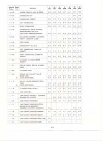
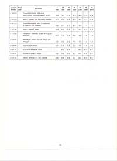
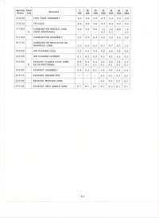
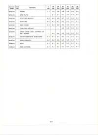
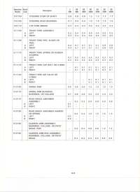
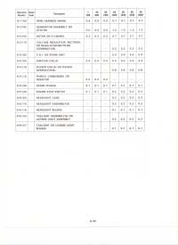
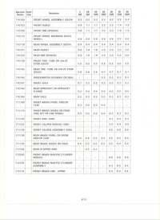
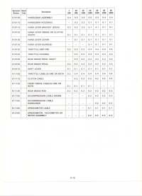

Motorcycle Flat Rate Times

Every repair job takes time. How much time a repair takes is known as the Flat Rate Time for that job. How do they come up with that time? The factory time studies the different motorcycles models on the assembly lines. They time each procedure a number of times and get an average time for each procedure. A procedure might be cut a valve seat, or assemble the valve and springs into the cylinder head or assemble a clutch. Each repair procedure is then assigned a number.
Factories like to time study every little thing for a reason. When a bike under warranty breaks the factory wants to fix it the cheapest way possible. They require the dealer who fixes the bike to put the number of each repair procedure of each repair on the request form for payment. The factory totals up all the repairs, multiplies that number by the agreed on shop rate and pays the dealer accordingly.
The shop rate is the amount per hour that the shop charges per hour of labor. Most shops post it in the service area or you can just ask them what it is.
Repair shops often use these flat rates to figure out how much is a fair price to charge for each repair. This sounds good and all until you consider one thing. Factories want to loose as little money as possible. Warranty work losses them money. So what is a factory to do? Simple, make the repair procedure go as fast as possible while still making it seem fair. So how do they do this?
I once worked for a company repairing Natural Gas Meters. While I was there I watched them create a time study for gas meter repair. They basically took the fastest repair man in the shop, gave him new meter bodies and parts and timed him putting the meters together as fast as he could go. It was ready, set, go.... work, work, work, one meter done. Work, work, work, two meters done. Work, work, work, three meters done. Stop and rest. Time it again. Take the best time and that is how long it should take for that procedure.
That is how the motorcycle factories do it too. Time a man who has spent his entire adult life putting a piston into a cylinder. Give him all new parts and time him going as fast as he can go. That will guarantee you get a really fast repair time. Do the factories really do this? Perhaps I might be exaggerating a bit but not by much.
So what does this have to do with us? Most shops use some sort of time studies to figure out what to charge their customers. In a way this is good and in another way it is bad. If you are a slow, precise mechanic (Also known as Me) the time studies give you a fair price to charge and allow you to spend as much time as is needed to complete the repair. That is good. Trouble is the time studies are not always accurate. Sometimes the studies do repair at warp speed. That is bad because a it does not allow enough time to realistically complete the repair.
Rusted bolts. Stripped screws. Dirty engines. Old rusty engines. These things make the job hard and time consuming. Sometimes engines just do not want to come apart. You have to worry and piddle with them to get them apart without breaking good, hard to find, parts.
So, in reality, the time study a factory gives for repair is more like a suggestion then a rule. What we really want is to know is the time it takes a trained mechanic, working at a reasonable speed, on a clean and well cared for motorcycle, to do a repair. If the motorcycle is rusted, dirty and poorly maintained the time it takes to repair it will be longer.
So let us put some numbers to this.
 Shop Rate 1 |
 Shop Rate 2 |
 Shop Rate 3 |
 Shop Rate 4 |
 Shop Rate 5 |
 Shop Rate 6 |
 Shop Rate 7 |
 Shop Rate 8 |
 Shop Rate 9 |
To Figure the actual price of a repair simply add up the times for all jobs done and multiply that number by your shop rate. So for a Honda XR200R remove & replace the cam chain (2.7), one carburetor cleaning (1.2), and change out rear chain (.4) you get a total time of 4.3 hours. Multiply by a $75.00 shop rate and you get $322.50 for the labor part of the job. Adding parts, taxes and sometimes a small bit for shop supplies (Grease, soap, solvents, ETC.) gives the total price for the job.
Not all shops use Flat Rate Manuals but Flat Rates do provide a useful starting place to figure a fair labor price. You can buy current model Motorcycle Flat Rate Manuals from many different places online or from a dealer of the brand of motorcycle you are working on but they can be quite pricey.
Here is, for your edification, a Labor Rate Table from 1972. Around 1969 I was running ads in the local paper for tune ups for Honda singles and twins for $12.50. The local shops were charging $15.00 for the same thing so I did quite well. About an hour and a half of pleasant work as I recall. Minimum wage was $1.15 an hour. Gas was about twenty to twenty five cents a gallon.

 |
 |
Copyright © 1999-2015 dansmc.com. All rights reserved.